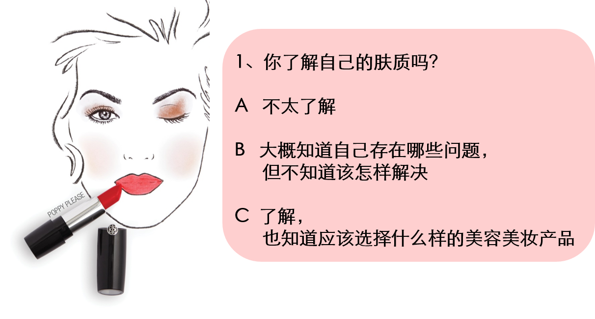
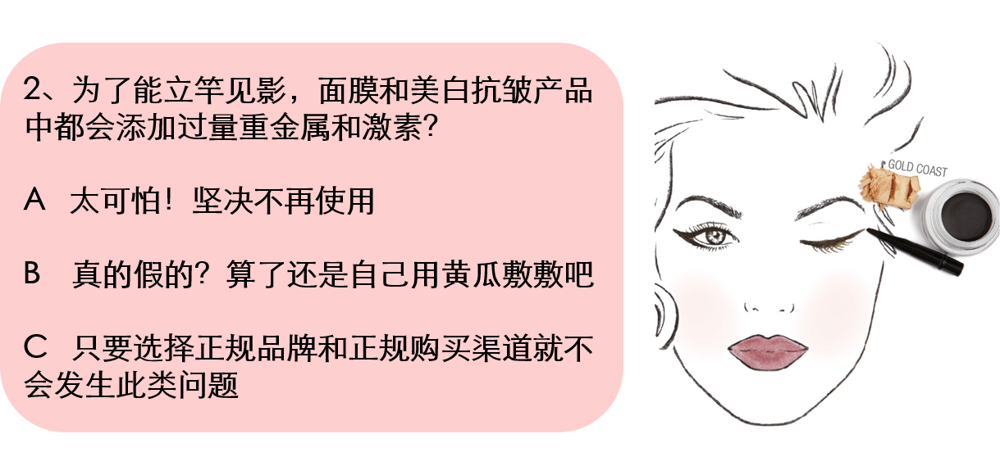
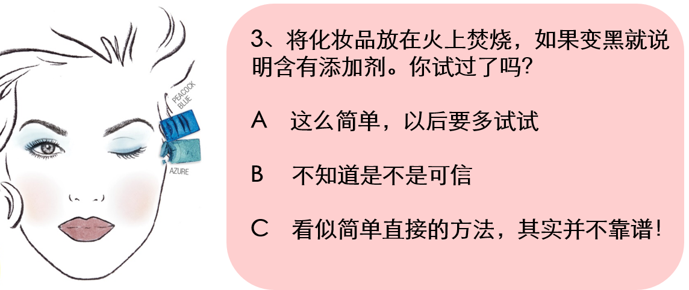
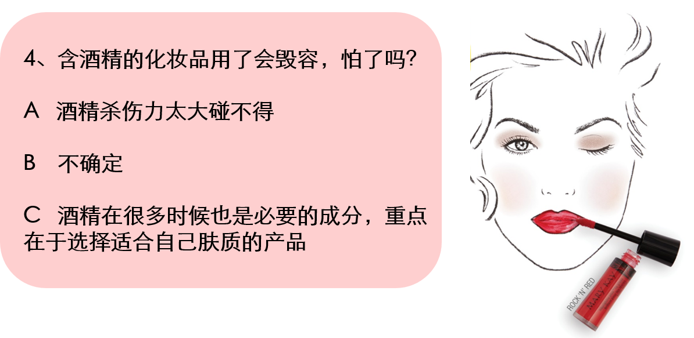
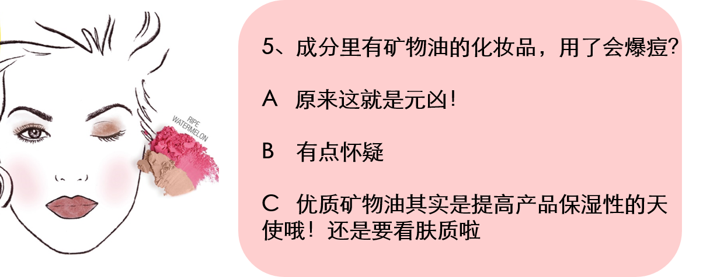
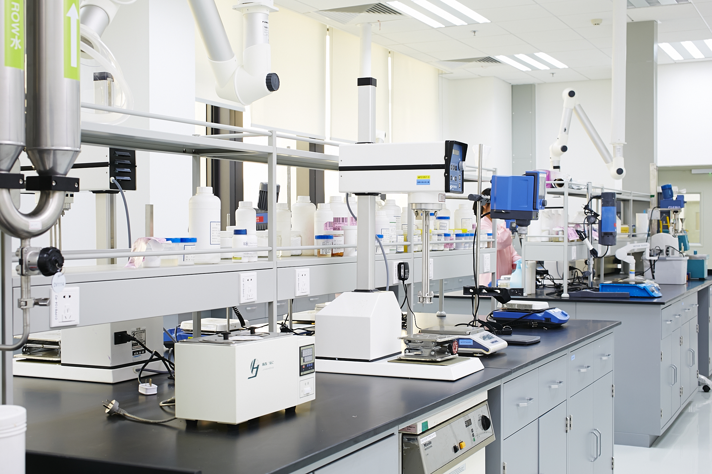

拼颜值，先来测“颜商”啦！
在面子问题上，天性爱美的姑娘们从不流于唇舌，而是把对颜值的追求拧成一种自上而下、由内而外的信念。
你的梳妆台经常上演护肤、彩妆，十八般武艺全上阵的壮观局面；你从不偷懒每天认真拜读美容美肤公号和杂志，勤奋地做着美丽功课……可是！如果没有TA，一切的努力可能都会南辕北辙哦！
⬇
什么是颜商？
听过智商和情商，“颜商”又是哪来的新鲜词儿？
颜商，指通过科学护肤美妆知识，挑选正确产品而让自己更加美丽的能力。
它直接反映了你对化妆品有多了解，也决定了你是否能找到科学、有效的护肤之道。
那么问题来了，你的颜商有多高呢？
测了就知道！





答
案
揭
晓
真相在这里！
Q：有必要了解自己的肤质吗？
A：这是健康护肤第一步
在拼“颜值”的今天，消费者越来越舍得在“颜”上花钱，可是如果不了解自己的肤质，面对琳琅满目，功能繁多的护肤品你会无从选择。
如果你对自己的肤质问题不甚了解，丰富多姿的美容课会是一个不错的选择哦！通过面对面的美容课，玫琳凯的美容顾问将为你提供个性化服务以及产品试用和护肤知识的讲解，从而让你找到适合自己的产品。
Q：化妆品含“毒”怎么破？
A：从选择正规厂家开始
不同于成本低廉的小厂家，正规品牌的研发和生产过程始终保持科学严谨。玫琳凯从开发阶段就会对每个原料进行安全性评估和检测，避免重金属和激素带来的风险。2015年，玫琳凯公司耗资百万人民币，在玫琳凯亚太生产制造基地质检中心顺利完成了PE Optima 8000 ICP(电感耦合等离子体发射光谱仪)的安装调试并正式投入运行。它的检测精度可达十亿分之一，可以发现1克样品中10亿分之1克的痕量重金属残留（就好比在10个标准足球场里找到一只蚂蚁）。
Q：在家鉴别化妆品成分靠谱吗？
A：显然你根本做不到
事实上，凡是碳和氢组成的有机化合物，包括矿物质成分、植物提取物、胶原蛋白等，在不完全燃烧情况下，都会变碳黑。只有专业人员通过精良仪器做出的验证才真正权威有效。玫琳凯亚太生产中心拥有理化实验室、微生物实验室及稳定性实验室，通过各项检测确保单一成分与单一成品均达到安全、质量和成效的高标准。

Q：酒精会导致毁容？
A：未免太片面
其实，酒精有杀菌的作用，还能优化护肤品的使用感。不过，皮肤容易干燥脱皮的干性肌肤及对酒精过敏的姑娘们需要避免使用哦。
Q：矿物油一定碰不得？
A：不能一概而论
矿物油本身没有什么错，也不应该是一个人见人打的成份，只是在不同的肤质使用过程中需要区分对待而已。
怎么样，这些测试题你答对了几道呢？
讲真，你是不是对诸如此类纷繁复杂的化妆品知识不甚了了？
平时好像也不知道从哪里可以有效掌握护肤的正确方式…….
玫琳凯的美容顾问就是你身边的好帮手。玫琳凯美容课的精髓就在于能够体贴每一个人的实际需求，你可以向美容顾问免费学习专业的护肤及彩妆知识，也会更了解自己的皮肤状况，懂得美容护肤的真正技巧，掌握使用化妆品增加自然美的诀窍。在玫琳凯，你获得的不仅仅是可靠安全的产品和贴心细致的服务，我们更会陪你一起学习成长，让高颜商成为你的日常居家必备！
颜商决定颜值，漂亮是一种姿态！
比身材、拼气质的年代，真女神的炼成可是智商、情商、颜商一个都不能少。
现在起随手转发，让身边的小伙伴都来测一测自己的颜商吧！知己知彼，百战百胜哦！